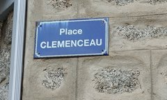
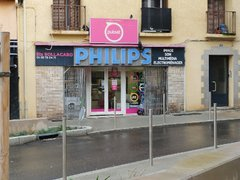
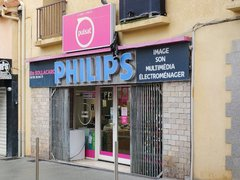
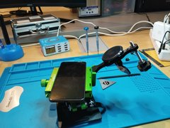
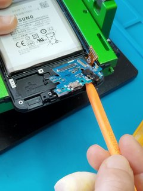
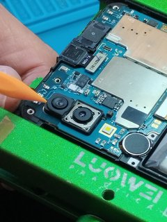
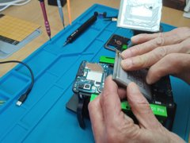
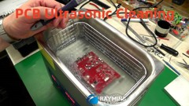
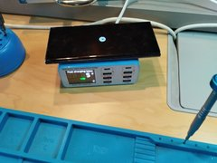

Réparer son téléphone chez Valinco Phone
Pourquoi réparer son téléphone à Propriano chez Valinco Phone ?
Faire réparer son téléphone permet souvent de prolonger la durée de vie de l’appareil tout en évitant l’achat d’un nouveau smartphone. Plus économique et moins de déchets électroniques.
Chez Valinco Phone, chaque appareil est examiné avec attention afin de proposer la solution la mieux adaptée : réparation, remplacement de quel type de pièces, compatibles ou original, et conseil.
Types de réparations réalisées à l’atelier
- 📱 Remplacement d’écran cassé ou endommagé
- 🔋 Remplacement de batterie
- 🔌 Réparation ou remplacement de connecteur de charge
- 📷 Réparation de caméra
- 🔊 Remplacement de haut-parleur ou microphone
- 🧪 Nettoyage et remise en état de cartes électroniques
- 🛠 Diagnostic et recherche de panne
Certaines interventions plus techniques, comme le nettoyage de cartes électroniques par ultrasons, peuvent aussi être réalisées lorsque cela permet de sauver un appareil.
Zone d’intervention
L’atelier Valinco Phone est situé à Propriano, en Corse-du-Sud. Les réparations sont proposées aux habitants de :
- Propriano
- Olmeto
- Sartène
- Porto-Pollo
- et plus largement à toute la région du Valinco
Besoin d’une réparation ou d’un conseil ?
Contacte directement Valinco Phone pour un premier échange, un diagnostic ou une information sur une pièce.
Appeler l’atelierGrâce au point de dépôt chez Pulsat Propriano, il est possible de déposer et récupérer facilement un appareil pour réparation.
Dépôt et retrait
Le dépôt et le retrait des appareils se font chez Pulsat Propriano , partenaire logistique.
- Pulsat n’effectue pas les réparations
- Les réparations sont réalisées par Valinco Phone
- Pulsat assure uniquement l’accueil et la restitution



L’atelier
Quelques exemples de réparations courantes :






Chez Valinco Phone, à l'Atelier
Chaque réparation est réalisée avec soin et sérieux. Les pièces utilisées sont sélectionnées avec attention et bénéficient d’une garantie.
Le technicien dispose de nombreuses années d’expérience dans le domaine des réparations de téléphones et de smartphones de différentes marques (iPhone, Samsung, Xiaomi, Huawei et autres). Chaque appareil fait l’objet d’un diagnostic précis, puis de tests après intervention afin de vérifier que tout fonctionne correctement.
L’objectif est simple : proposer un service de réparation de qualité, clair et honnête, afin que chaque client reparte avec un téléphone réparé dans les meilleures conditions.
Contact
📍 Propriano – Corse-du-Sud
📧 valinco.cyber@gmail.com
📞 +33 7 54 37 22 33